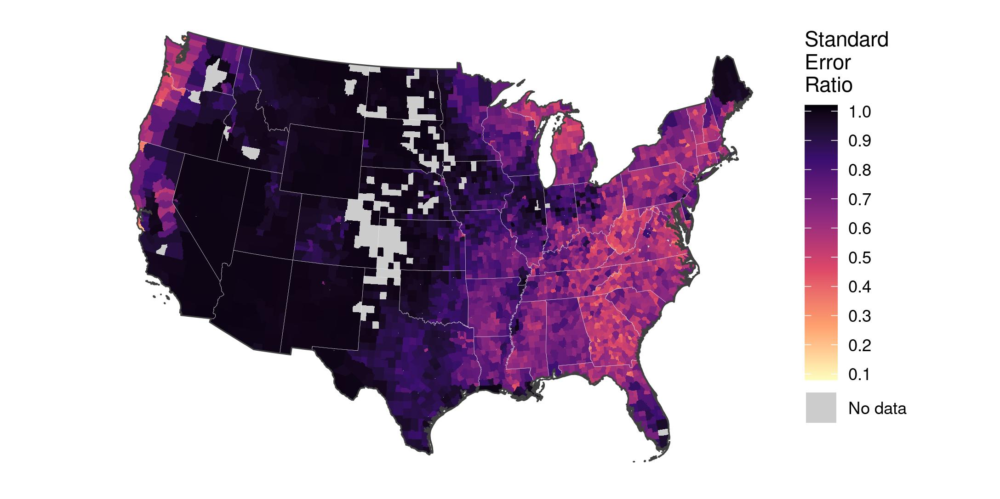
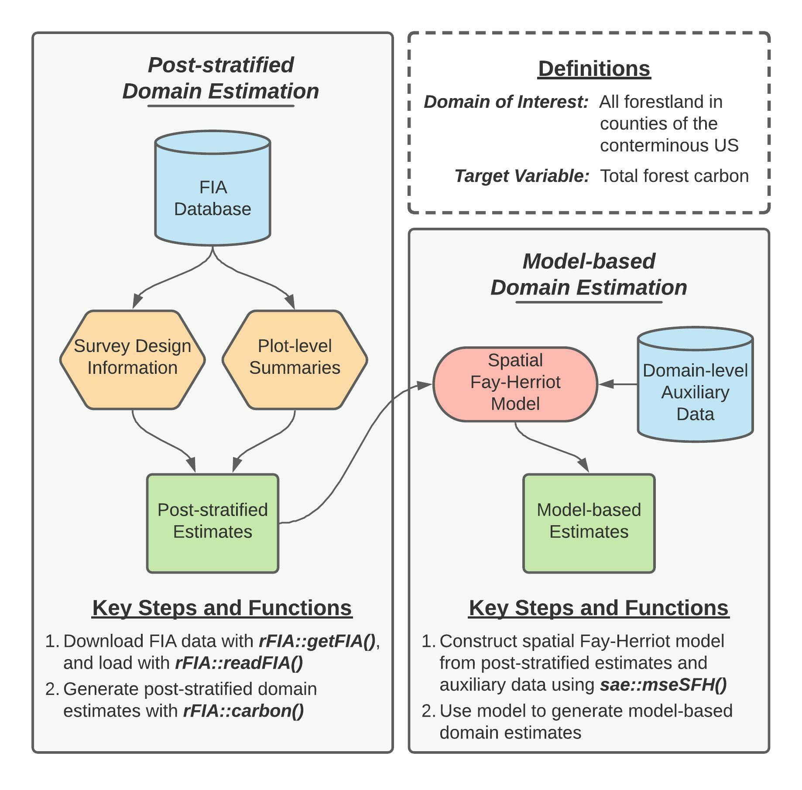

Estimating county-level forest carbon stocks
Hunter Stanke
2022
Source:vignettes/fgcCS1.Rmd
fgcCS1.Rmd
This page provides a detailed tutorial of the code used to implement the first case study presented in Stanke, Finley, Domke (2021), “Simplifying small area estimation with rFIA: a demonstration of tools and techniques”. Note that this tutorial only shows the code and does not show the results of the code. Here, we use the post-stratified estimators implemented in rFIA to estimate current forest carbon stocks within counties across the conterminous US (CONUS), and develop a domain-level spatial Fay-Herriot model to couple these post-stratified estimates with auxiliary climate variables and improve precision of estimated carbon stocks.

Figure 1 (re-printed above for convenience) provides a concept map illustrating key steps, functions, and workflows used in the development of our spatial Fay-Herriot model of forest carbon stocks in conterminous US. Here, blue cylinders represent data inputs, green rectangles represent domain estimates, and orange hexagons represent intermediate data products.
In words, this process consists consists of two primary stages:
- Produce post-stratified estimates of carbon stocks and associated
variances for all forestland in each county (i.e., our domains of
interest) using
rFIA. - ``Smooth’’ post-stratified estimates using a model constructed from domain-average climate variables and spatial random effects to improve precision of estimated quantities within each domain.
Getting Started
Downloading code and data from GitHub
Data and code required to replicate our workflows are available on GitHub. If you
are familiar with Git, simply clone this repository on your local
machine to get started. If you are not familiar, click on the
Code dropdown in the upper-right hand corner of the landing
page here
(just left of the About section), and you can download the
full repository as a zip file.
Important: we house code and data associated with
both case studies presented in this manuscript in the GitHub repository
referenced above. Everything you need for this case study (estimating
county-level forest carbon stocks) can be found in the
carbon/ directory.
- Source code is located in
carbon/src/ - FIA and PRISM data are downloaded from public servers by
getFIA.RandgetPRISM.R, respectively. These data will be stored in thecarbon/data/directory once downloaded. - Results (i.e., population estimates) generated by source code are
stored in
carbon/results/ -
To run: source scripts in the following order (1)
getFIA.R, (2)directEstimates.R, (3)fitModel.R. Please see the “Bonus Code” section at the end of this document for details regarding thegetPRISM.Rscript (used to download county shapefiles and climate data).
Installing dependencies
The analyses detailed herein are conducted using the R programming
language, and hence require a working installation of R (version 4.0.0
or newer). You can find instructions and tutorials for installing R here.
In addition to base R, the following add-on packages are required:
rFIA, sae, dplyr,
sf, and here. These packages (and their
respective dependencies) can be installed with:
Downloading FIA data
Next, we must download an appropriate subset of the FIA Database from
the FIA
DataMart. The easiest way to accomplish this is using the
getFIA() function from the rFIA R package. In
the code that follows, we download the subset of the FIA Database for
all states in the coterminous US, and save these data to a local
directory on our computer
(your-project-directory/carbon/data/FIA/):
## Download/save FIA data for all states in the lower 48
# Vector of states
lower48 <- c('AL', 'AZ', 'AR', 'CA', 'CO', 'CT', 'DE', 'FL', 'GA', 'ID',
'IL', 'IN', 'IA', 'KS', 'KY', 'LA', 'ME', 'MD', 'MA', 'MI',
'MN', 'MS', 'MO', 'MT', 'NE', 'NV', 'NH', 'NJ', 'NM', 'NY',
'NC', 'ND', 'OH', 'OK', 'OR', 'PA', 'RI', 'SC', 'SD', 'TN',
'TX', 'UT', 'VT', 'VA', 'WA', 'WV', 'WI', 'WY')
# Download
rFIA::getFIA(states = lower48,
dir = here::here('carbon/data/FIA/'),
load = FALSE)Important: data downloaded in the code presented
above are large (FIA data > 50GB). Only download once (all data will
be saved on disk), and consider subsetting the spatial extent (i.e.,
select a handful of states, for example with
lower48 = c('WA', 'OR')) if you would prefer to avoid
downloading this much data.
Post-stratified estimates of forest carbon with
rFIA
Loading FIA data into R
Before we can use rFIA’s estimator functions (e.g.,
carbon()), we must first use readFIA() to load
our FIA data into R, or alternatively, set up a “remote” FIA data
object. This “remote” option is particularly useful when our area(s) of
interest span multiple states, as it allows rFIA’s estimator functions
to split FIA data into small chunks and process each individually,
thereby allowing us to work with large amounts of FIA data without
overloading our computer’s RAM.
As we are working with all states in the lower 48 here (~50 GB of
data), we elect to set up a “remote” FIA data object by specifying
inMemory=FALSE in the call to readFIA():
db <- rFIA::readFIA(dir = here::here('carbon/data/FIA'),
inMemory = FALSE)where dir references the directory where we have saved
the FIA data we downloaded with getFIA() (example
above).
Selecting a most recent subset
Next we take a temporal subset of our FIA data, i.e., we select data
associated with the most recent inventories available in each state. The
clipFIA() function handles spatial and temporal queries,
and we specify a most recent subset by setting
mostRecent=TRUE:
db <- rFIA::clipFIA(db,
mostRecent = TRUE)Estimating forest carbon stocks county-by-county
Finally, we use the carbon() function to produce
post-stratified estimates of forest carbon stocks on a county-by-county
basis:
# Load shapefile of county boudaries
counties <- sf::st_read(here::here('carbon/data/counties_climate/')) %>%
# Albers Equal Area NA
sf::st_transform(crs = 'ESRI:102008') %>%
# Compute area of each county, sq m --> ha
dplyr::mutate(ha = as.numeric(sf::st_area(.) / 10000)) %>%
# A unique ID for counties
dplyr::mutate(county.id = paste(STATEFP, COUNTYFP, sep = '_'))
# Produce post-stratified estimates of total forest carbon
# within each county boundary
pop.est <- rFIA::carbon(db,
polys = counties,
totals = TRUE,
variance = TRUE,
byPool = FALSE) # Sum across carbon poolsWe use a spatial dataset (i.e., county boundary shapefile) to
delineate counties here. We tell the carbon() function to
treat counties as unique domains by handing our spatial county dataset
to the polys argument. If we omit the polys
argument, rFIA will treat all states in our remote FIA data
object, db, as a single domain of interest. Importantly,
our spatial dataset contains county-average climate variables that will
be used as auxiliary variables in the development of our Fay-Herriot
model in subsequent steps. By handing our spatial dataset to the
carbon() function, all variables in the spatial dataset are
automatically appended to the resulting dataset (i.e.,
pop.est contains post-stratified estimates of forest
carbon, as well as auxiliary climate variables).
We could also tell the carbon() function to treat
counties as unique domains by specifying grpBy=COUNTYCD,
where COUNTYCD is a county identifier (FIPS code) defined
in the FIA database. Both approaches will yield the same results, but we
take the spatial approach here to improve the generality of this code
for adaptation by subsequent users.
Finally, we specify byPool = FALSE as
carbon() estimates carbon stocks grouped by IPCC forest
carbon pools by default (i.e., defaults to byPool = TRUE).
As we are interested in total forest carbon in this
application, we specify byPool = FALSE and thereby tell
carbon() to sum carbon stocks across all IPCC pools.
Fitting the spatial Fay-Herriot model with sae
Before we can use the sae package to fit a spatial
Fay-Herriot model, we need to get data containing our post-stratified
estimates of forest carbon stocks and auxiliary climate data into an
appropriate format, and construct a spatial proximity matrix to identify
adjacency among counties.
Data wrangling and preparation
First, we prepare the data object containing our post-stratified estimates of forest carbon stocks and auxiliary climate variables by (1) converting population totals to population means (dividing by known area of counties), (2) convert units of our carbon variables from tons carbon per hectare to tons CO2-equivalent per hectare, (3) computing the relative standard error of resulting post-stratified population estimates, and (4) scaling our climate predictors:
pop.est <- pop.est %>%
# Forest carbon unit conversion
dplyr::mutate(carb = CARB_TOTAL / ha / (12/44),
carb.var = CARB_TOTAL_VAR / (ha^2) / ((12/44)^2)) %>%
# Compute relative standard error
dplyr::mutate(carb.rse = sqrt(carb.var) / carb) %>%
# Take log of mean annual precipitation
dplyr::mutate(map = log(map)) %>%
# Center and scale ppt and tmean
dplyr::mutate(mat = scale(mat),
map = scale(map)) Constructing a spatial proximity matrix
Finally, we must construct a row-standardized proximity matrix that indicates adjacency of counties within the coterminous US, where row-standardization indicates that all “neighbors” of a particular domain are assigned equal weight. For those unfamiliar with such constructs, please see slides 19-25 here.
# Function to identify neighbors using rook method
st_rook <- function(a, b = a){
sf::st_relate(a, b, pattern = "F***1****")
}
# Sparse binary predicate --> dense binary matrix
prox.mat <- counties %>%
dplyr::filter(county.id %in% pop.est$county.id) %>%
dplyr::mutate(NB_QUEEN = st_rook(.))
prox.mat <- as.matrix(prox.mat$NB_QUEEN)
# Binary matrix to proximity matrix required by `sae`
for (i in 1:nrow(prox.mat)) {
# Number of neighbors
nn <- sum(prox.mat[i,])
# Weight each neighbor equally
prox.mat[i,] <- prox.mat[i,] / nn
}
# Replace NAs w/ zero
prox.mat[is.na(prox.mat)] <- 0Fitting the spatial Fay-Herriot model
We may now combine our post-stratified population estimates,
auxiliary climate variables, and spatial proximity matrix to fit a
spatial Fay-Herriot model, using the mseSFH() function from
the sae package:
# A design matrix
design.mat <- cbind(as.factor(pop.est$county.id),
pop.est$mat,
pop.est$map)
# Fit the model
mod <- sae::mseSFH(carb ~ design.mat,
vardir = carb.var,
proxmat = prox.mat,
method = 'REML',
data = pop.est)Here design.mat is a
matrix of climate predictors (2957 counties, 2 predictors),
carb is a vector of post-stratified estimates of
county-level forest carbon stocks and carb.var are the
associated post-stratified variance estimates (assumed known for the
purposes of the Fay-Herriot model).
Bonus code: Downloading and processing PRISM data in R
While only the code above is required to replicate the analyses
presented in the associated manuscript (Stanke, Finley, Domke (2021)),
we have included this additional section that provides details regarding
our construction of the counties spatial dataset used above
for users interested in extending our analyses. All code which follows
has been adapted from the script located in
/carbon/src/getPRISM.R.
Download climate data from PRISM and load into R
Now we will use the prism package to download 30-year
temperature and precipitation normals released by the PRISM Group. These data are
defined on an 800m grid spanning the CONUS, and are distributed in
raster format:
# Where should climate rasters be stored?
options(prism.path = here::here('carbon/data/PRISM/'))
# Download precipitation normals
prism::get_prism_normals(type = "ppt",
resolution = '800m',
annual = TRUE,
keepZip = FALSE)
# Download temperature normals
prism::get_prism_normals(type = "tmean",
resolution = '800m',
annual = TRUE,
keepZip = FALSE)
# Read precipitation normals
ppt <- stars::read_stars(
here::here('carbon/data/PRISM/PRISM_ppt_30yr_normal_800mM3_annual_bil
/PRISM_ppt_30yr_normal_800mM3_annual_bil.bil')
)
# Read temperature normals
tmean <- stars::read_stars(
here::here('carbon/data/PRISM/PRISM_tmean_30yr_normal_800mM3_annual_b
il/PRISM_tmean_30yr_normal_800mM3_annual_bil.bil')
)Download county boundaries
Next, we download a spatial dataset that delineates county boundares for all states in coterminous US:
# Vector of states
lower48 <- c('AL', 'AZ', 'AR', 'CA', 'CO', 'CT', 'DE', 'FL', 'GA', 'ID',
'IL', 'IN', 'IA', 'KS', 'KY', 'LA', 'ME', 'MD', 'MA', 'MI',
'MN', 'MS', 'MO', 'MT', 'NE', 'NV', 'NH', 'NJ', 'NM', 'NY',
'NC', 'ND', 'OH', 'OK', 'OR', 'PA', 'RI', 'SC', 'SD', 'TN',
'TX', 'UT', 'VT', 'VA', 'WA', 'WV', 'WI', 'WY')
# Download county boundaries
counties <- tigris::counties(state = lower48) %>%
# Re-project to match climate data
sf::st_transform(crs = sf::st_crs(ppt))Aggregate climate raster data into county-level averages
In our spatial county dataset, each row represents a unique county. Hence, we can iterate (“loop”) over rows in the county dataset, extract the climate data that overlaps with the county, and summarize the climate data into a series of descriptive statistics (mean, sd, etc). Here we will only save the mean of annual temperature and precipitation variables:
# Save our summaries in these vectors, "growing" them as we iterate
county.temp <- c()
county.ppt <- c()
for (i in 1:nrow(counties)) {
# Crop our climate rasters down to the county boundary
tmean.crop <- sf::st_crop(tmean, counties[i,])
ppt.crop <- sf::st_crop(ppt, counties[i,])
# Save mean temp and ppt
county.temp <- c(county.temp, mean(tmean.crop[[1]], na.rm = TRUE))
county.ppt <- c(county.ppt, mean(ppt.crop[[1]], na.rm = TRUE))
}Append aggregate climate variables to spatial data
Finally, we add our aggregated climate variables to our county
boundary dataset, and save the resulting data as a shapefile in the
carbon/data/counties_climate/ directory:
# Now we add our climate summaries to our spatial county dataset
counties$mat <- county.temp # Mean annual temperature
counties$map <- county.ppt # Mean annual precipitation
# Simplify structure of spatial data and save
counties <- counties %>%
dplyr::select(STATEFP, COUNTYFP, NAME, mat, map)
sf::write_sf(counties,
here::here(
'carbon/data/counties_climate/counties_climate.shp'
)
)